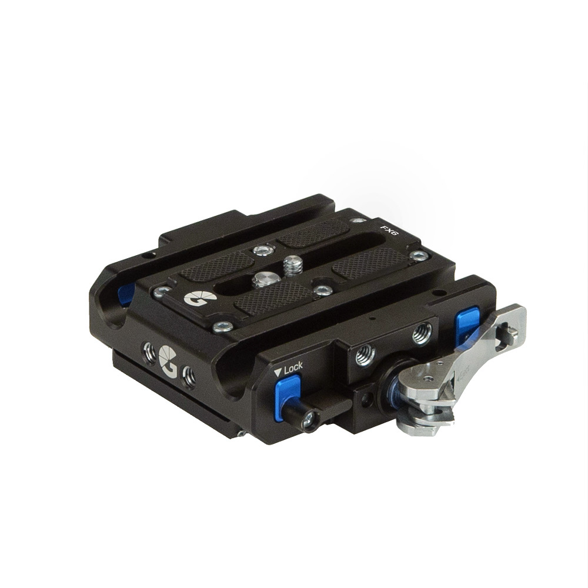

PRODUCT COPY
|
|
DOCUMENT DATE:
PRODUCT NAME:
RELEASE DATE:
|
August 16, 2021 11:53 AM
Sony FX6
14/8/21
|
|
|
|
|
B4004.0019 - Sony FX6 LeftField QR Baseplate
Set your Sony FX6 at the correct height for 15mm LWS,
speeding up transitions with the Open•UP quick-release that lets you lift of the camera from the dovetail. To support
accessories, add a set of 15mm rods.
This Baseplate Kit comes with the LeftField 15mm Baseplate, LeftField Dovetail Plate & Sony FX6 Riser.
- Compatible with any ARRI standard dovetail
- Snap on & snap off without needing to slide off dovetail
- Includes riser for Sony FX6
- Configurable with multiple cameras using interchangeable risers
- CNC cut from aluminium billet & hard-anodised for durability
|

|
|
|
FULL DESCRIPTION
|
|
The Sony FX6 LeftField Quick Release Baseplate sets the camera to the correct height for 15mm LWS. It provides 15mm rod support for accessories and allows for faster transitions between setups using the patented Open•UP quick-release.
Snap On, Snap Of
The Open•UP quick-release features a three-stage design which lets you securely locks the baseplate in place, slide for balance & lift off vertically. This is particularly useful for large camera builds where sliding the camera from the dovetail can be difficult.
ARRI Dovetail Compatible
The baseplate automatically calibrates to any ARRI standard dovetail, even those that our out of tolerance and is also compatible with the LeftField Dovetail Plate for smaller setups.
Interchangeable Risers
A wide range of risers are available to suit different cameras. If you own, rent or work with multiple cameras, simply swap the risers without buying a new baseplate each time.
No Compromises
Machined and hand-finished in our single factory in Church Crookham from high-grade materials. Hard anodised for extended durability.
|
|